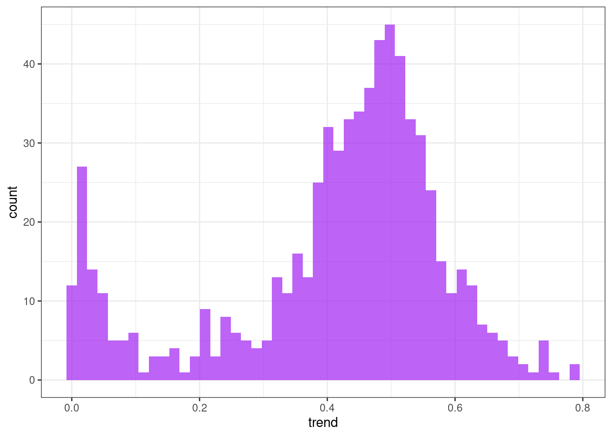
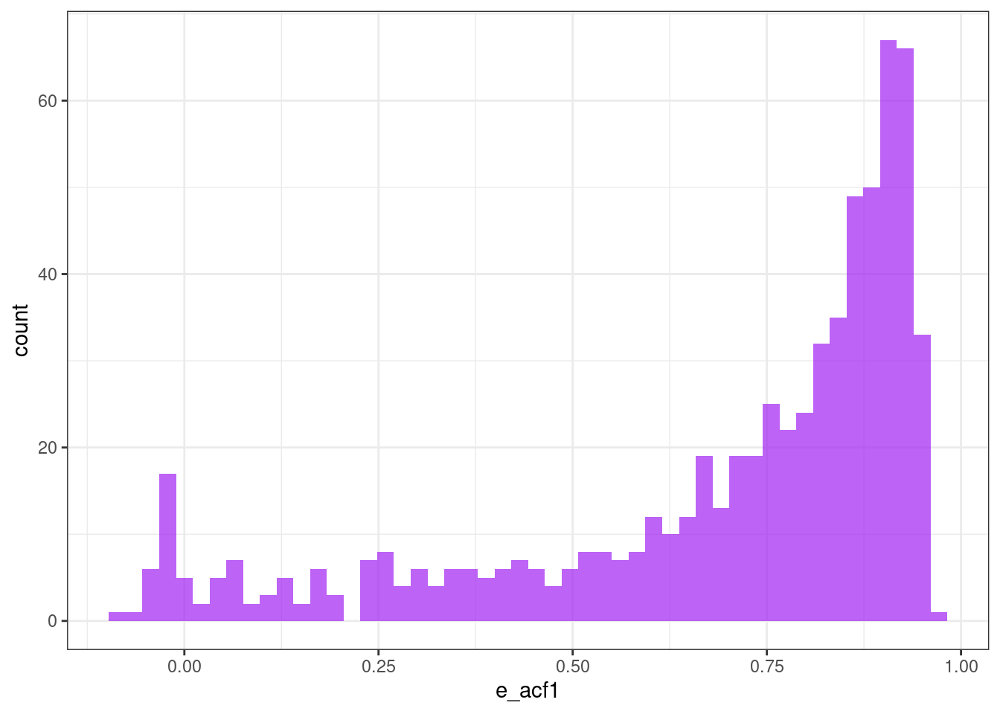
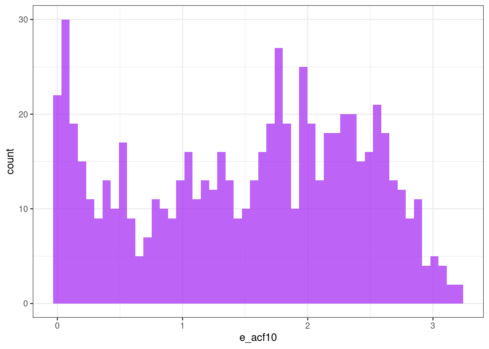
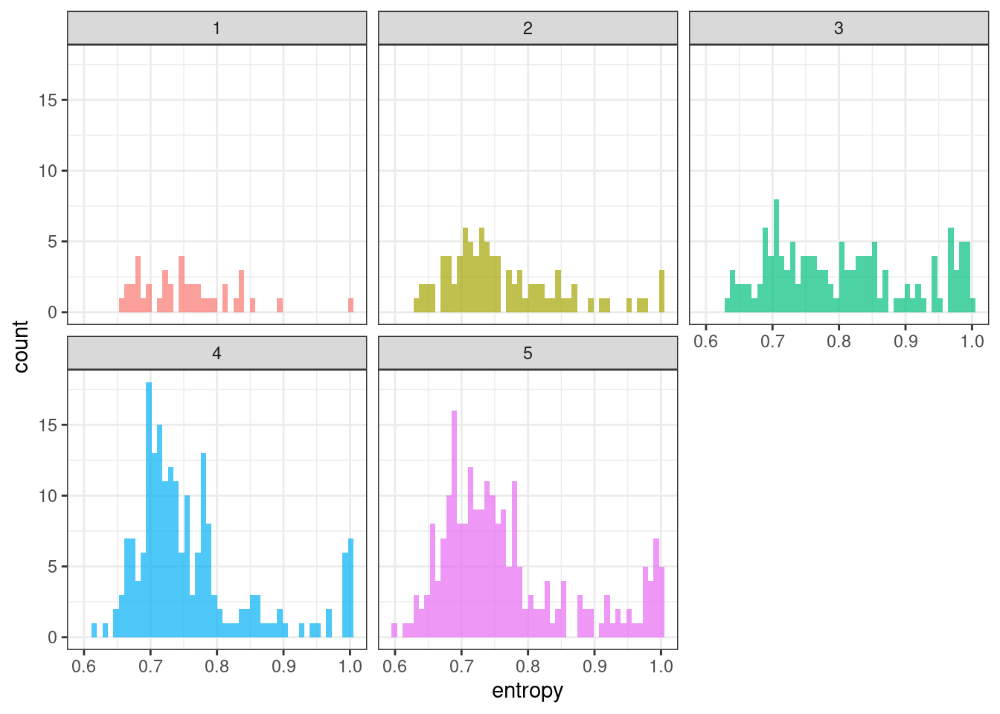
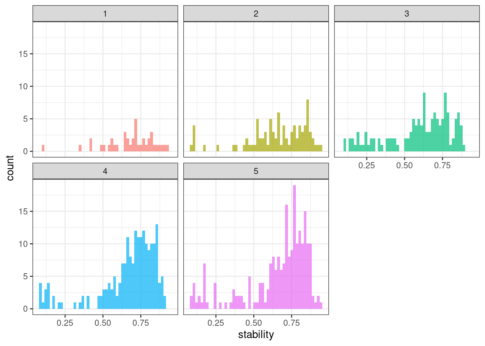
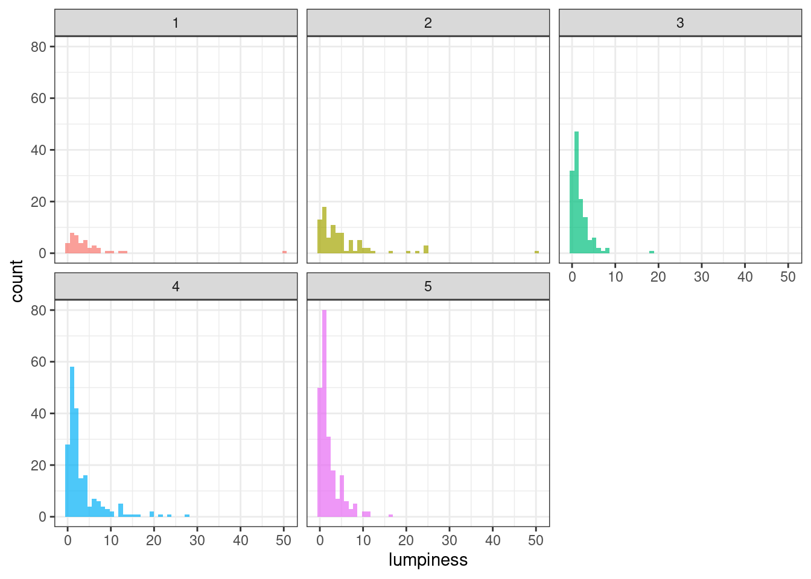
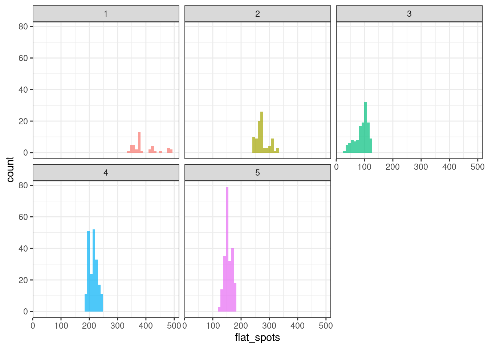
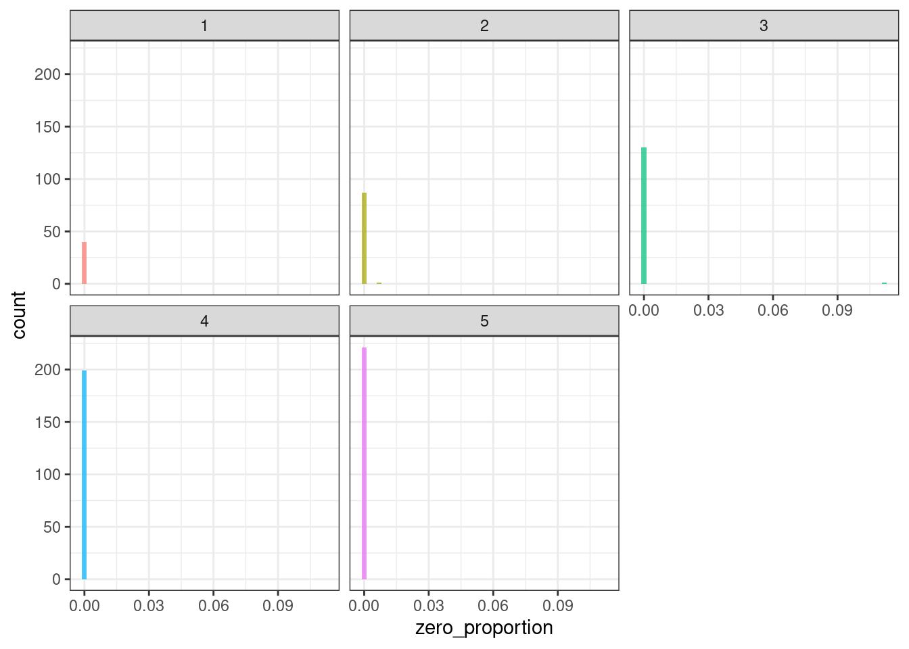
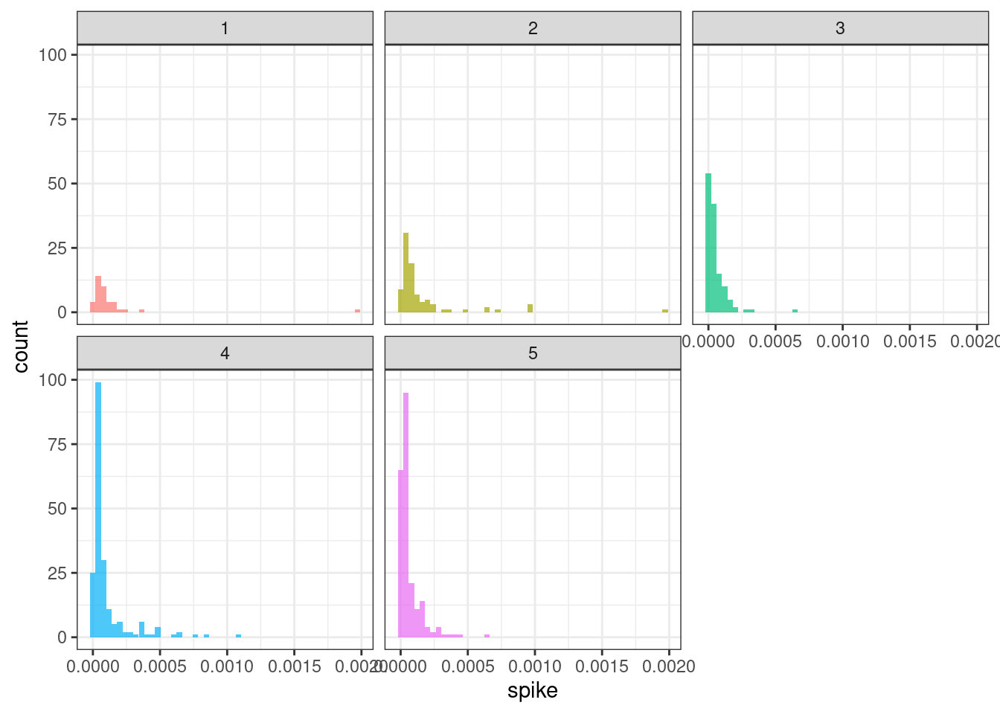
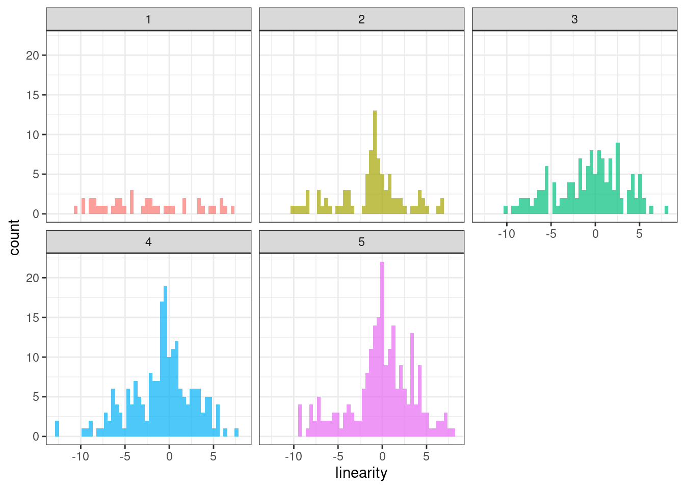

library(tidyverse)
library(tidymodels)
library(arrow)
library(tsfeatures)
library(broom)
library(DT)
source("../functions.R")Time series features
with scaled cases
This notebook aims to explore time series features of dengue cases that may guide the clustering procedures. Time series features descriptions are quoted from Hyndman et al. (2022) .
Packages
Functions
Perform Kolmogorov-Smirnorf tests between groups statistics.
Code
ks_group_test <- function(stat){
tsf_group_split <- tsf_group %>%
# Select variables and statistic
select(group, statistic = !!stat) %>%
# Split to list
group_split(group)
# Matrix of possible combinations
comb <- combn(x = unique(tsf_group$group), m = 2)
# Resuls data frame
ks_results <- tibble()
# For each group combination, perform ks.test
for(i in 1:ncol(comb)){
g_a <- comb[1,i]
g_b <- comb[2,i]
res <- ks.test(
x = tsf_group_split[[g_a]]$statistic,
y = tsf_group_split[[g_b]]$statistic
) %>% tidy()
tmp <- tibble(
g_a = g_a,
g_b = g_b,
statistic = round(res$statistic, 4),
pvalue = round(res$p.value, 4)
)
ks_results <- bind_rows(ks_results, tmp)
}
ks_results %>%
arrange(g_a, g_b)
}Load data
Load the bundled data (679 municipalities, pop \(\geq\) 50k inhab.) with standardized cases and keep only the municipality code, date and cases variables.
tdengue <- open_dataset(sources = data_dir("bundled_data/tdengue.parquet")) %>%
select(mun, date, cases) %>%
collect()Prepare data
Convert panel data to a list of ts objects.
tdengue_df <- tdengue %>%
arrange(mun, date) %>%
select(-date) %>%
nest(data = cases, .by = mun)
tdengue_list <- lapply(tdengue_df$data, ts)Time series features
tsf <- tsfeatures(
tslist = tdengue_list,
features = c("entropy", "stability",
"lumpiness", "flat_spots",
"zero_proportion", "stl_features",
"acf_features")
)
tsf$mun <- tdengue_df$munAll features available at the tsfeatures package were computed. Bellow, details about some of them.
Shannon entropy
Measures the “forecastability” of a time series, where low values indicate a high signal-to-noise ratio, and large values occur when a series is difficult to forecast.
\[ -\int^\pi_{-\pi}\hat{f}(\lambda)\log\hat{f}(\lambda) d\lambda \]
ggplot(tsf, aes(x = entropy)) +
geom_histogram(bins = 50, alpha = .7, fill = "purple") +
theme_bw()
Stability & lumpiness
Stability and lumpiness are two time series features based on tiled (non-overlapping) windows. Means or variances are produced for all tiled windows. Then stability is the variance of the means, while lumpiness is the variance of the variances.
ggplot(tsf, aes(x = stability)) +
geom_histogram(bins = 50, alpha = .7, fill = "purple") +
theme_bw()
ggplot(tsf, aes(x = lumpiness)) +
geom_histogram(bins = 50, alpha = .7, fill = "purple") +
theme_bw()
Flat spots
Flat spots are computed by dividing the sample space of a time series into ten equal-sized intervals, and computing the maximum run length within any single interval.
ggplot(tsf, aes(x = flat_spots)) +
geom_histogram(bins = 50, alpha = .7, fill = "purple") +
theme_bw()
STL features decomposition
Trend
ggplot(tsf, aes(x = trend)) +
geom_histogram(bins = 50, alpha = .7, fill = "purple") +
theme_bw()
Spike
ggplot(tsf, aes(x = spike)) +
geom_histogram(bins = 50, alpha = .7, fill = "purple") +
theme_bw()
Linearity
ggplot(tsf, aes(x = linearity)) +
geom_histogram(bins = 50, alpha = .7, fill = "purple") +
theme_bw()
Curvature
ggplot(tsf, aes(x = curvature)) +
geom_histogram(bins = 50, alpha = .7, fill = "purple") +
theme_bw()
First autocorrelation coefficient
ggplot(tsf, aes(x = e_acf1)) +
geom_histogram(bins = 50, alpha = .7, fill = "purple") +
theme_bw()
Sum of the first ten squared autocorrelation coefficients
ggplot(tsf, aes(x = e_acf10)) +
geom_histogram(bins = 50, alpha = .7, fill = "purple") +
theme_bw()
Autocorrelation function (ACF) features
ggplot(tsf, aes(x = x_acf1)) +
geom_histogram(bins = 50, alpha = .7, fill = "purple") +
theme_bw()ggplot(tsf, aes(x = x_acf10)) +
geom_histogram(bins = 50, alpha = .7, fill = "purple") +
theme_bw()
ggplot(tsf, aes(x = diff1_acf1)) +
geom_histogram(bins = 50, alpha = .7, fill = "purple") +
theme_bw()ggplot(tsf, aes(x = diff1_acf10)) +
geom_histogram(bins = 50, alpha = .7, fill = "purple") +
theme_bw()ggplot(tsf, aes(x = diff2_acf1)) +
geom_histogram(bins = 50, alpha = .7, fill = "purple") +
theme_bw()
ggplot(tsf, aes(x = diff2_acf10)) +
geom_histogram(bins = 50, alpha = .7, fill = "purple") +
theme_bw()
Clustering
This procedure goal is to cluster the municipalities considering time series features similarities.
K-means clustering
Cluster the municipalities based solely on the time series features.
points <- tsf %>%
select(-mun)Uses \(k\) from 2 to 10 for clustering.
kclusts <-
tibble(k = 2:10) %>%
mutate(
kclust = map(k, ~kmeans(points, .x)),
tidied = map(kclust, tidy),
glanced = map(kclust, glance),
augmented = map(kclust, augment, points)
)Isolate results.
clusters <-
kclusts %>%
unnest(cols = c(tidied))
assignments <-
kclusts %>%
unnest(cols = c(augmented))
clusterings <-
kclusts %>%
unnest(cols = c(glanced))The total sum of squares is plotted. The $k=5$ seems to be a break point.
ggplot(clusterings, aes(k, tot.withinss)) +
geom_line() +
geom_point() +
theme_bw()Identify municipalities and cluster id
Finally, the cluster partition ID is added to the main dataset.
cluster_ids <- clusterings %>%
filter(k == 5) %>%
pull(augmented) %>%
pluck(1) %>%
select(group = .cluster) %>%
mutate(mun = tdengue_df$mun)Cluster sizes
table(cluster_ids$group)
1 2 3 4 5
40 88 131 199 221 Cluster time series plot
inner_join(tdengue, cluster_ids, by = "mun") %>%
ggplot(aes(x = date, y = cases, color = mun)) +
geom_line(alpha = .3) +
facet_wrap(~group) +
theme_bw() +
theme(legend.position = "none")Time series features per group
Add group Id to time series feautures.
tsf_group <- left_join(tsf, cluster_ids, by = "mun")Shannon entropy
ggplot(tsf_group, aes(x = entropy, fill = group)) +
geom_histogram(bins = 50, alpha = .7) +
facet_wrap(~ group) +
theme_bw() +
theme(legend.position = "none")
ks_group_test("entropy") %>% datatable()Stability & lumpiness
ggplot(tsf_group, aes(x = stability, fill = group)) +
geom_histogram(bins = 50, alpha = .7) +
facet_wrap(~ group) +
theme_bw() +
theme(legend.position = "none")
ks_group_test("stability") %>% datatable()ggplot(tsf_group, aes(x = lumpiness, fill = group)) +
geom_histogram(bins = 50, alpha = .7) +
facet_wrap(~ group) +
theme_bw() +
theme(legend.position = "none")
ks_group_test("lumpiness") %>% datatable()Flat spots
ggplot(tsf_group, aes(x = flat_spots, fill = group)) +
geom_histogram(bins = 50, alpha = .7) +
facet_wrap(~ group) +
theme_bw() +
theme(legend.position = "none")
ks_group_test("flat_spots") %>% datatable()Zero proportion
ggplot(tsf_group, aes(x = zero_proportion, fill = group)) +
geom_histogram(bins = 50, alpha = .7) +
facet_wrap(~ group) +
theme_bw() +
theme(legend.position = "none")
ks_group_test("zero_proportion") %>% datatable()STL features decomposition
Trend
ggplot(tsf_group, aes(x = trend, fill = group)) +
geom_histogram(bins = 50, alpha = .7) +
facet_wrap(~ group) +
theme_bw() +
theme(legend.position = "none")ks_group_test("trend") %>% datatable()Spike
ggplot(tsf_group, aes(x = spike, fill = group)) +
geom_histogram(bins = 50, alpha = .7) +
facet_wrap(~ group) +
theme_bw() +
theme(legend.position = "none")
ks_group_test("spike") %>% datatable()Linearity
ggplot(tsf_group, aes(x = linearity, , fill = group)) +
geom_histogram(bins = 50, alpha = .7) +
facet_wrap(~ group) +
theme_bw() +
theme(legend.position = "none")
ks_group_test("linearity") %>% datatable()Curvature
ggplot(tsf_group, aes(x = curvature, fill = group)) +
geom_histogram(bins = 50, alpha = .7) +
facet_wrap(~ group) +
theme_bw() +
theme(legend.position = "none")ks_group_test("curvature") %>% datatable()First autocorrelation coefficient
ggplot(tsf_group, aes(x = e_acf1, fill = group)) +
geom_histogram(bins = 50, alpha = .7) +
facet_wrap(~ group) +
theme_bw() +
theme(legend.position = "none")ks_group_test("e_acf1") %>% datatable()Sum of the first ten squared autocorrelation coefficients
ggplot(tsf_group, aes(x = e_acf10, fill = group)) +
geom_histogram(bins = 50, alpha = .7) +
facet_wrap(~ group) +
theme_bw() +
theme(legend.position = "none")ks_group_test("e_acf10") %>% datatable()Autocorrelation function (ACF) features
ggplot(tsf_group, aes(x = x_acf1, fill = group)) +
geom_histogram(bins = 50, alpha = .7) +
facet_wrap(~ group) +
theme_bw() +
theme(legend.position = "none")ks_group_test("x_acf1") %>% datatable()ggplot(tsf_group, aes(x = x_acf10, fill = group)) +
geom_histogram(bins = 50, alpha = .7) +
facet_wrap(~ group) +
theme_bw() +
theme(legend.position = "none")ks_group_test("x_acf10") %>% datatable()ggplot(tsf_group, aes(x = diff1_acf1, fill = group)) +
geom_histogram(bins = 50, alpha = .7) +
facet_wrap(~ group) +
theme_bw() +
theme(legend.position = "none")ks_group_test("diff1_acf1") %>% datatable()ggplot(tsf_group, aes(x = diff1_acf10, fill = group)) +
geom_histogram(bins = 50, alpha = .7) +
facet_wrap(~ group) +
theme_bw() +
theme(legend.position = "none")ks_group_test("diff1_acf10") %>% datatable()ggplot(tsf_group, aes(x = diff2_acf1, fill = group)) +
geom_histogram(bins = 50, alpha = .7) +
facet_wrap(~ group) +
theme_bw() +
theme(legend.position = "none")ks_group_test("diff2_acf1") %>% datatable()ggplot(tsf_group, aes(x = diff2_acf10, fill = group)) +
geom_histogram(bins = 50, alpha = .7) +
facet_wrap(~ group) +
theme_bw() +
theme(legend.position = "none")ks_group_test("diff2_acf10") %>% datatable()Session info
sessionInfo()R version 4.3.2 (2023-10-31)
Platform: x86_64-pc-linux-gnu (64-bit)
Running under: Ubuntu 22.04.3 LTS
Matrix products: default
BLAS: /usr/lib/x86_64-linux-gnu/blas/libblas.so.3.10.0
LAPACK: /usr/lib/x86_64-linux-gnu/lapack/liblapack.so.3.10.0
locale:
[1] LC_CTYPE=en_US.UTF-8 LC_NUMERIC=C
[3] LC_TIME=en_CA.UTF-8 LC_COLLATE=en_US.UTF-8
[5] LC_MONETARY=en_CA.UTF-8 LC_MESSAGES=en_US.UTF-8
[7] LC_PAPER=en_CA.UTF-8 LC_NAME=C
[9] LC_ADDRESS=C LC_TELEPHONE=C
[11] LC_MEASUREMENT=en_CA.UTF-8 LC_IDENTIFICATION=C
time zone: Europe/Paris
tzcode source: system (glibc)
attached base packages:
[1] stats graphics grDevices utils datasets methods base
other attached packages:
[1] DT_0.30 tsfeatures_1.1.1 arrow_13.0.0.1 yardstick_1.2.0
[5] workflowsets_1.0.1 workflows_1.1.3 tune_1.1.2 rsample_1.2.0
[9] recipes_1.0.8 parsnip_1.1.1 modeldata_1.2.0 infer_1.0.5
[13] dials_1.2.0 scales_1.2.1 broom_1.0.5 tidymodels_1.1.1
[17] lubridate_1.9.3 forcats_1.0.0 stringr_1.5.0 dplyr_1.1.3
[21] purrr_1.0.2 readr_2.1.4 tidyr_1.3.0 tibble_3.2.1
[25] ggplot2_3.4.4 tidyverse_2.0.0
loaded via a namespace (and not attached):
[1] rlang_1.1.2 magrittr_2.0.3 furrr_0.3.1
[4] tseries_0.10-54 compiler_4.3.2 vctrs_0.6.4
[7] lhs_1.1.6 quadprog_1.5-8 pkgconfig_2.0.3
[10] fastmap_1.1.1 ellipsis_0.3.2 backports_1.4.1
[13] labeling_0.4.3 utf8_1.2.4 rmarkdown_2.25
[16] prodlim_2023.08.28 tzdb_0.4.0 bit_4.0.5
[19] xfun_0.41 cachem_1.0.8 jsonlite_1.8.7
[22] parallel_4.3.2 R6_2.5.1 bslib_0.5.1
[25] stringi_1.7.12 parallelly_1.36.0 rpart_4.1.21
[28] jquerylib_0.1.4 lmtest_0.9-40 Rcpp_1.0.11
[31] assertthat_0.2.1 iterators_1.0.14 knitr_1.45
[34] future.apply_1.11.0 zoo_1.8-12 Matrix_1.6-1.1
[37] splines_4.3.2 nnet_7.3-19 timechange_0.2.0
[40] tidyselect_1.2.0 rstudioapi_0.15.0 yaml_2.3.7
[43] timeDate_4022.108 codetools_0.2-19 curl_5.1.0
[46] listenv_0.9.0 lattice_0.22-5 quantmod_0.4.25
[49] withr_2.5.2 urca_1.3-3 evaluate_0.23
[52] future_1.33.0 survival_3.5-7 xts_0.13.1
[55] pillar_1.9.0 foreach_1.5.2 generics_0.1.3
[58] TTR_0.24.3 forecast_8.21.1 hms_1.1.3
[61] munsell_0.5.0 globals_0.16.2 class_7.3-22
[64] glue_1.6.2 tools_4.3.2 data.table_1.14.8
[67] gower_1.0.1 grid_4.3.2 crosstalk_1.2.0
[70] ipred_0.9-14 colorspace_2.1-0 nlme_3.1-163
[73] fracdiff_1.5-2 cli_3.6.1 DiceDesign_1.9
[76] fansi_1.0.5 lava_1.7.3 gtable_0.3.4
[79] GPfit_1.0-8 sass_0.4.7 digest_0.6.33
[82] farver_2.1.1 htmlwidgets_1.6.2 htmltools_0.5.7
[85] lifecycle_1.0.4 hardhat_1.3.0 bit64_4.0.5
[88] MASS_7.3-60 References
Hyndman, Rob, Yanfei Kang, Pablo Montero-Manso, Thiyanga Talagala, Earo Wang, Yangzhuoran Yang, and Mitchell O’Hara-Wild. 2022. “Tsfeatures: Time Series Feature Extraction.” https://CRAN.R-project.org/package=tsfeatures.